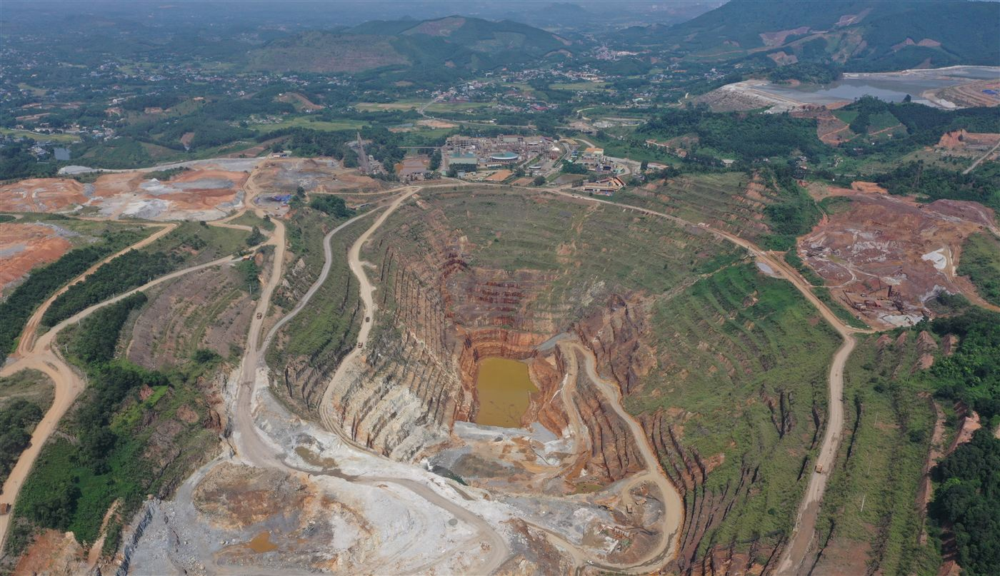

Mining geotechnics
Engineering the ground around open-pit operations, with attention to slope behaviour, monitoring and geotechnical risk.
MINING GEOTECHNICS · ENERGY GEOSTRUCTURES · DIGITAL INNOVATION
I’m Doan Cong Bien, a geotechnical engineer and PhD student working across mining geotechnics and energy geostructure research.
Mine ground. Energy systems. Geotechnical insight.

THE PERSPECTIVE
My professional work is rooted in mining geotechnics, including open-pit slope assessment, geological mapping, geotechnical monitoring and tailings storage facilities. Alongside this practice, my doctoral research investigates energy geostructures: geotechnical structures fitted with heat-exchange loops that draw thermal energy from the ground and transfer it to a ground-source heat pump for heating and cooling. I am also interested in artificial intelligence and deep learning as emerging tools for geotechnical investigation and interpretation.
I’m interested in conversations that connect engineering practice, academic inquiry and responsible digital innovation.
View professional background on LinkedInA shared foundation in soil and rock mechanics, ground behaviour and engineering judgement.
Engineering the ground around open-pit operations, with attention to slope behaviour, monitoring and geotechnical risk.
Studying how heat-exchange loops integrated into geotechnical structures can harness ground heat and connect it to ground-source heat pump systems.
An emerging interest in applying AI and deep learning to geotechnical data, investigation and interpretation.
PROFESSIONAL EXPERIENCE
Mining geotechnics, ground improvement and geotechnical laboratory experience.
Nui Phao Mining Co., Ltd. · Masan High-Tech Materials
Geotechnical investigation, slope stability assessment and hazard management. Geological mapping, pit-wall monitoring and controlled-blasting coordination; geotechnical monitoring and seepage studies for tailings storage facilities.
Suranaree University of Technology · Thailand
Geotechnical laboratory teaching support.
Keller Foundations (SE Asia) Pte Ltd.
Ground improvement experience with vibro-compaction and vibro-replacement methods.
EDUCATION & RESEARCH
Chonnam National University · South Korea
Research focus: energy geostructures.
Suranaree University of Technology · Thailand
Research on a large-scale waste dump failure at the Mae Moh mine in Thailand.
Dunarea de Jos University of Galati · Romania
University of Transport and Communications · Vietnam
Academic work on beam bridge design and cement deep mixing for soft-ground improvement.
TECHNICAL TOOLKIT
Rocscience Slide, Dips, Swedge and RS2 · GeoStudio · PLAXIS · Quickslope
QGIS · gINT · GEOVIA Surpac · 3DM Analyst · ShapeMetriX UAV · Drone piloting
Geotechnical laboratory testing · In-situ geotechnical testing · Hydrological field testing
PROFESSIONAL DEVELOPMENT
SELECTED RECOGNITION
PUBLICATIONS
Investigation of a large-scale waste dump failure at the Mae Moh mine in Thailand
Hoy, M., Doan, C. B., et al. · Engineering Geology, 329, 107400 (2024).
Read the publicationFIELDWORK & ENGINEERING
A glimpse of mining environments, geotechnical work
and professional learning moments.
READING LIBRARY
A curated starter shelf based on the books and papers in my geotechnical collection. Links lead to publishers, journals or official organizations.
FOUNDATIONS & PRACTICE
Core references on soil mechanics, site investigation and applied geotechnical engineering.
BOOKS
PAPER
MINING APPLICATIONS
Open-pit slope design, mine waste dumps, monitoring and geotechnical risk.
BOOKS
PAPER
ROCK ENGINEERING
Rock mass behaviour, mine and civil slopes, underground excavations and stability.
BOOKS
PAPER
TAILINGS & FACILITIES
Tailings dam planning, design, operations, monitoring and safety management.
BOOKS & STANDARDS
PAPERS
Book PDFs and journal articles are not mirrored here unless their licence permits redistribution. Use the linked publisher or official source for the full text.
LET’S CONNECT
Interested in mining geotechnics, energy geostructures or AI for geotechnics? Let’s exchange ideas and explore shared interests.